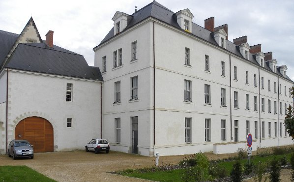
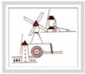
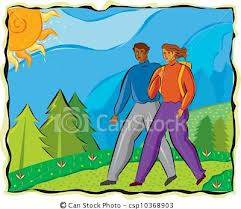

Commune d'Ingrandes-Le Fresne / Loire
Association Tourisme Culture et Patrimoine
Les Liens ...
Retour à la page
d'accueil
La commune d'Ingrandes/Le Fresne
La COMPA
Ou sommes-nous?
Le tourisme vert
Bibliothèque d'histoire et du patrimoine du pays d'Ancenis
Les Moulins d'Anjou

Les stations vertes



La Loire en vélo

La fédération française de randonnées